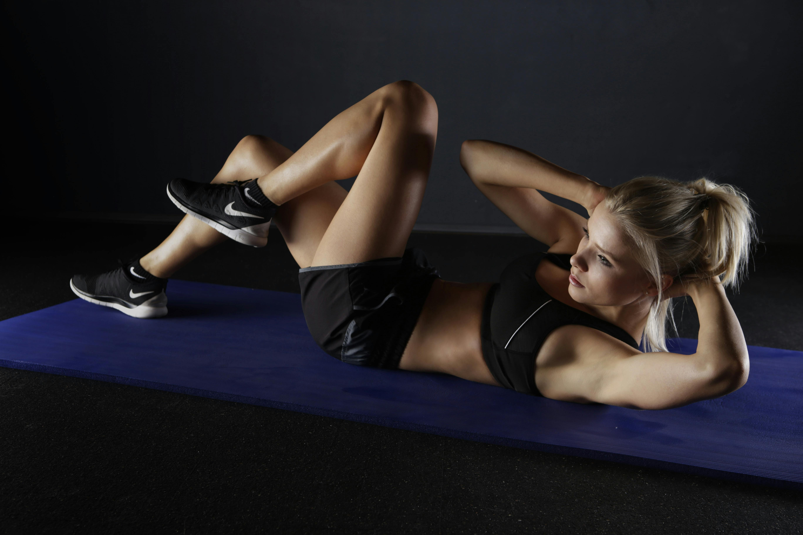
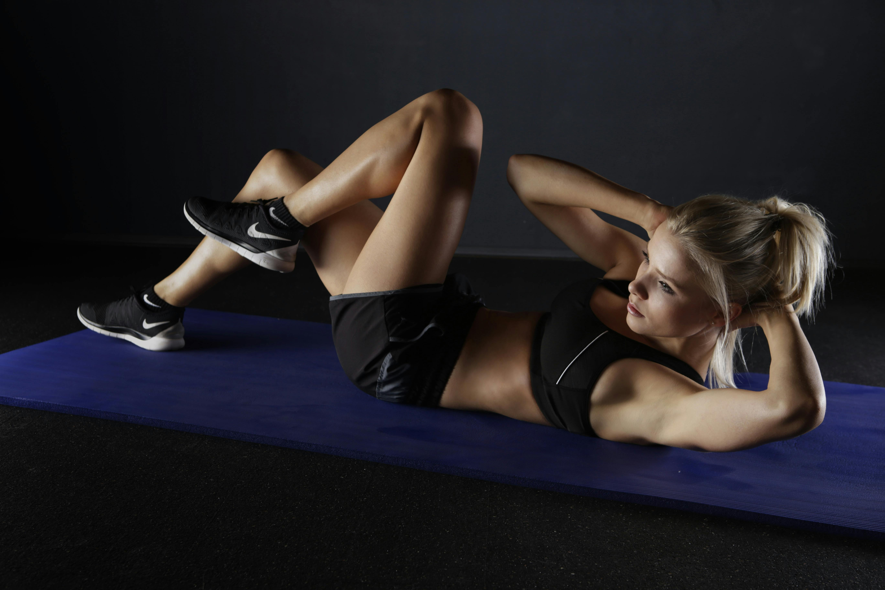

6-Day Full Body Workout Schedule for Womens
Whether you're just starting your fitness journey or you're looking to level up your routine, this 6-day gym workout plan is designed to help you build muscle, lose fat, and gain strength. Each day focuses on a specific muscle group with carefully selected exercises tailored for Beginners, Intermediates, and Advanced lifters. With consistent effort and proper nutrition, this structured plan will help you achieve your fitness goals effectively and safely.
DAY-1 GLUTES&HAMSTRING
DAY-2 UPPER BODY TONING
| Workout |
Beginner |
Intermediate |
Advanced |
| Glute Bridges | 12 x 2 | 15 x 3 | 20 x 4 |
| Romanian Deadlifts | 10 x 2 | 10 x 3 | 8 x 4 |
| Hip Thrusts | 10 x 2 | 12 x 3 | 15 x 4 |
| Hamstring Curl Machine | 12 x 2 | 12 x 3 | 10 x 4 |
| Workout |
Beginner |
Intermediate |
Advanced |
| Dumbbell Shoulder Press | 10 x 2 | 10 x 3 | 12 x 4 |
| Lat Pulldown | 10 x 2 | 10 x 3 | 12 x 4 |
| Tricep Kickbacks | 12 x 2 | 12 x 3 | 15 x 4 |
| Bicep Curls | 12 x 2 | 12 x 3 | 12 x 4 |
DAY-3 LEGS&THIGS
DAY-4 CORE
| Workout |
Beginner |
Intermediate |
Advanced |
| Bodyweight Squats | 15 x 2 | 20 x 3 | 25 x 4 |
| Leg Press | 10 x 2 | 10 x 3 | 12 x 4 |
| Step-Ups | 10/leg x 2 | 12/leg x 3 | 15/leg x 4 |
| Lunges | 10 x 2 | 12 x 3 | 15 x 4 |
| Workout |
Beginner |
Intermediate |
Advanced |
| Crunches | 15 x 2 | 20 x 3 | 30 x 4 |
| Leg Raises | 12 x 2 | 15 x 3 | 20 x 4 |
| Russian Twists | 10 x 2 | 12 x 3 | 15 x 4 |
| Plank | 30 sec x 2 | 45 sec x 3 | 1 min x 4 |
DAY-5 GLUTES&CARDIO
DAY-6 RECOVERY&CORE
| Workout |
Beginner |
Intermediate |
Advanced |
| Kettlebell Swings | 15 x 2 | 15 x 3 | 20 x 4 |
| Donkey Kicks | 12 x 2 | 15 x 3 | 20 x 4 |
| Jump Squats | 10 x 2 | 12 x 3 | 15 x 4 |
| Jump Rope | 2 min | 3 min | 5 min |
| Workout |
Beginner |
Intermediate |
Advanced |
| Brisk Walk or Light Cycling | 15 mins | 20 mins | 30 mins |
| Bird Dogs | 10 x 2 | 12 x 3 | 15 x 4 |
| Side Plank | 30 sec | 45 sec | 1 min |
| Stretching/Yoga | 10 mins | 15 mins | 20 mins |
 
